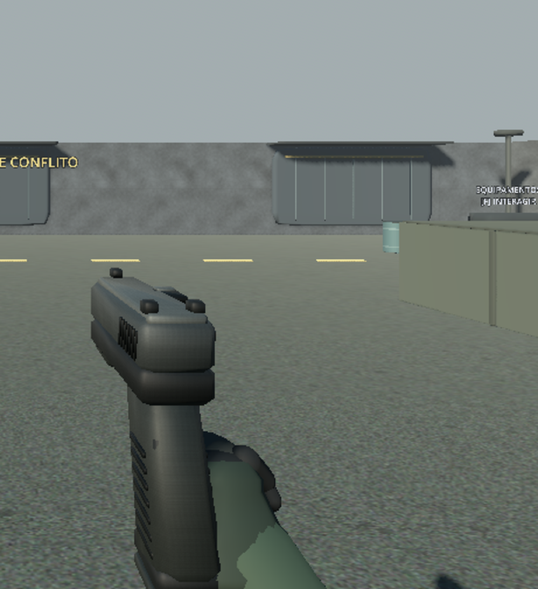
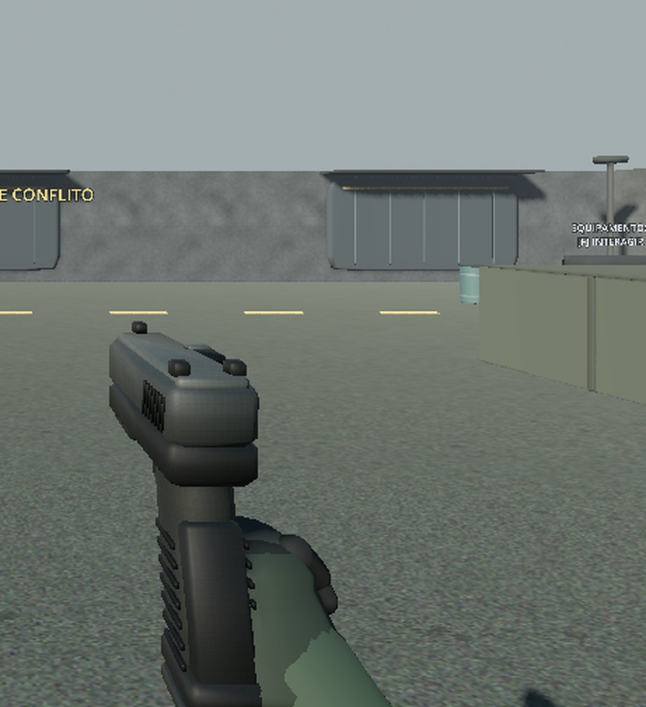
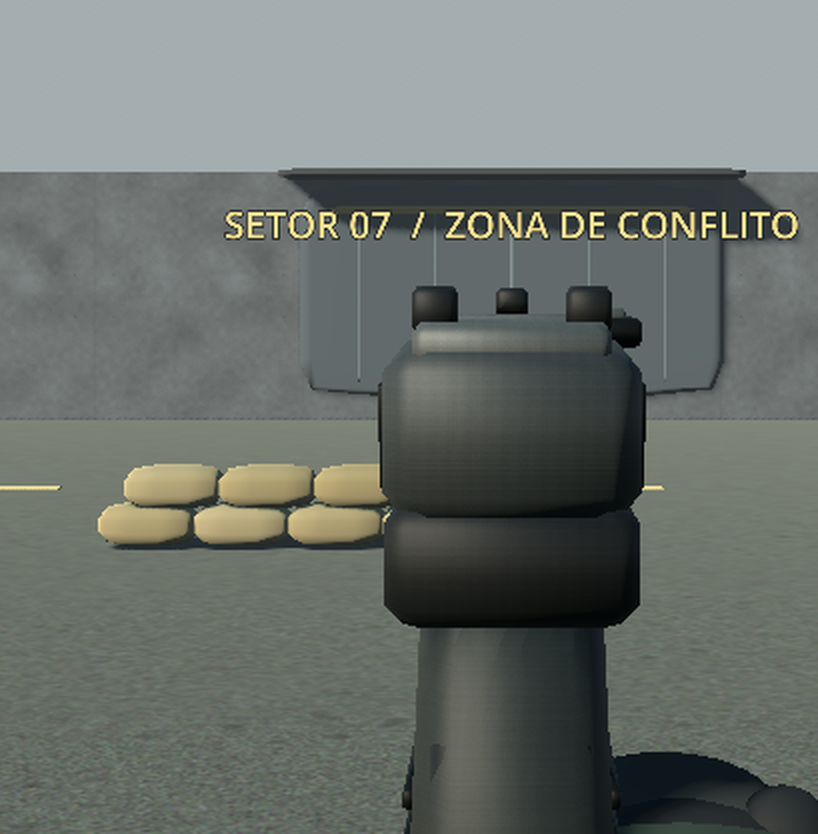
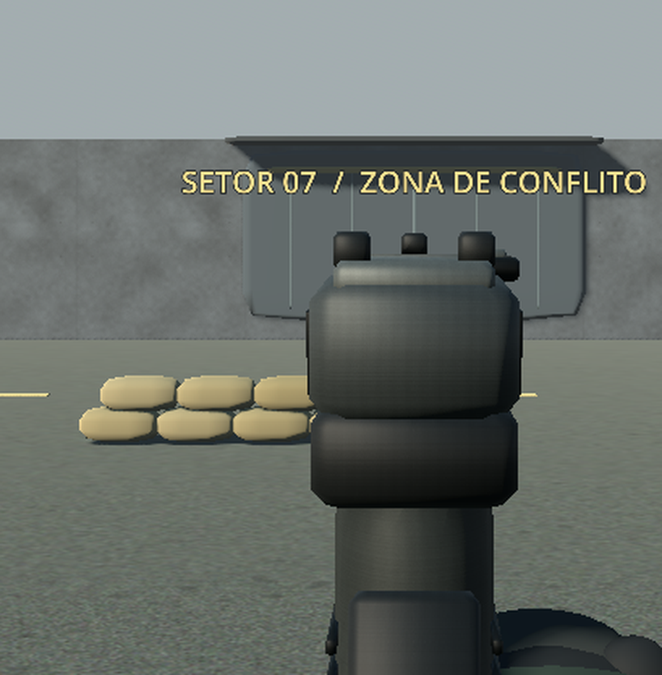

<!doctype html><html lang="pt-BR"><meta charset="utf-8">
<title>02-01 — recortes Godot</title>
<style>body{margin:0;background:#14171a;color:#e6edf3;font:12px system-ui;padding:10px;display:grid;grid-template-columns:1fr 1fr;gap:8px}figure{margin:0;border:1px solid #2b3238;border-radius:6px;overflow:hidden;background:#0b0d0f}figcaption{padding:4px 6px;color:#9aa7b2}img{display:block;width:100%}</style>
<figure><figcaption>Antes — repouso</figcaption></figure>
<figure><figcaption>Depois — repouso</figcaption></figure>
<figure><figcaption>Antes — ADS</figcaption></figure>
<figure><figcaption>Depois — ADS</figcaption></figure>
</html>
